Introduction
In this part, the goal is to separate two entangled lines of text in printed text characters.
Dataset
Printing errors that end up mixing two lines are not so common, and to the best of my knowledge there is no existing dataset for this problem. Therefore I generate a training and a validation dataset with a bash script, using LaTex and ImageMagick. The training set contains 10001 images, and the validation set contains 1001 images. The images are 256x256 with the two lines of text in font 10 at 100dpi. See below for a few examples.
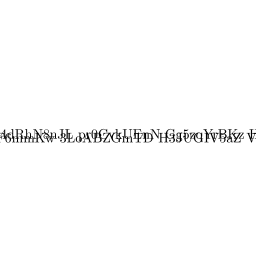 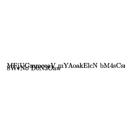 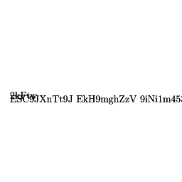
Original approach
At first my idea, following the project instructions, was to take the image as input and output only the first line. The network only took a one channel image as input, and outputted only a one channel image, which should be the line on top. However this approach had poor results and even after tweaking the GAN parameters I was unable to train an effective model. See below a few examples of the output of this model (from left to right: input image, expected output, actual output).
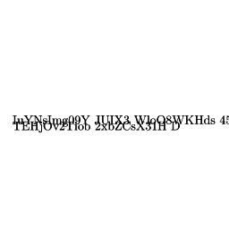 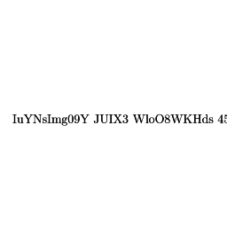 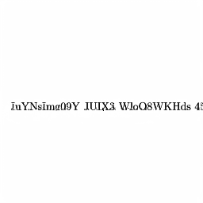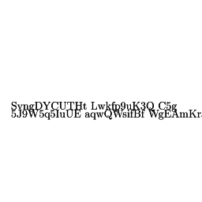 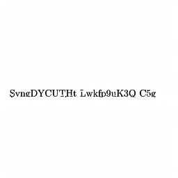
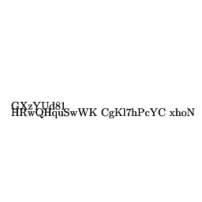 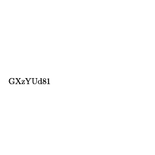 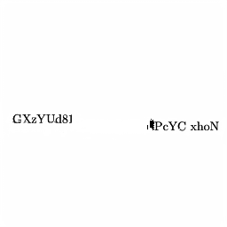
3 channel approach
After this (relative) failure, I decided to change to a 3 channel input and output. The output of the network would then be a 3 channel image with, on each channel respectively:
1) the first line
2) the second line
3) the background
Strictly speaking, the third channel with the background is unnecessary for the desired result. However, the idea behind it was to use it as a condition to help the network converge, with a condition such as channel1+channel2=1-channel3. However this was not necessary since this 3 channel approach was immediately much more successful than the original one.
Regarding the practical implementation, the images are still 256x256. 10001 training images and 1001 validation images have been generated. The GAN has been trained for 30 epochs. See below for some of the results on the validation set (from left to right: input image, expected output, actual output).
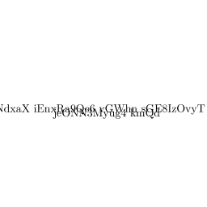 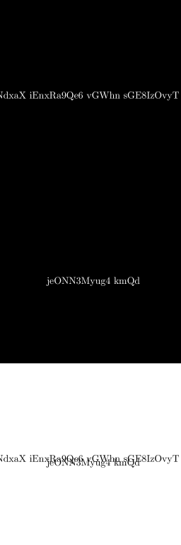 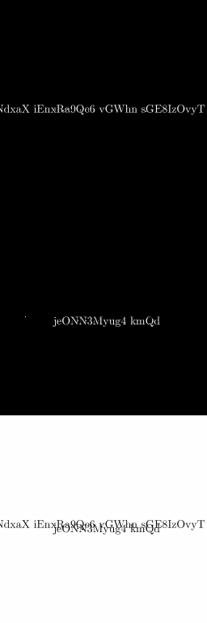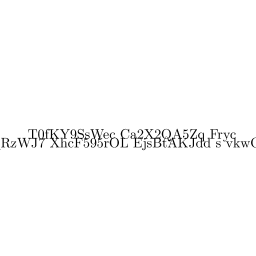 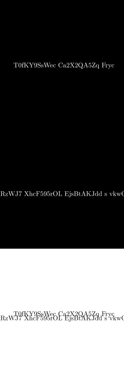 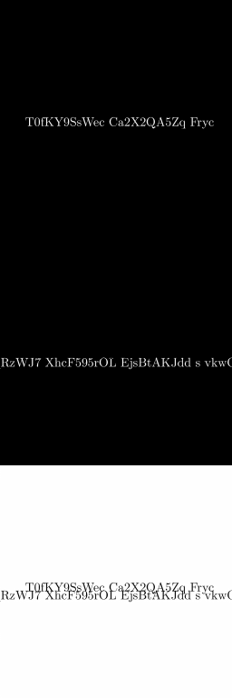
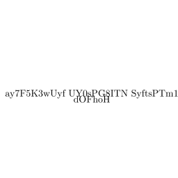 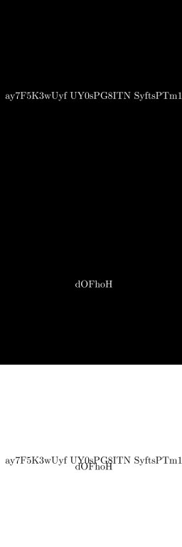 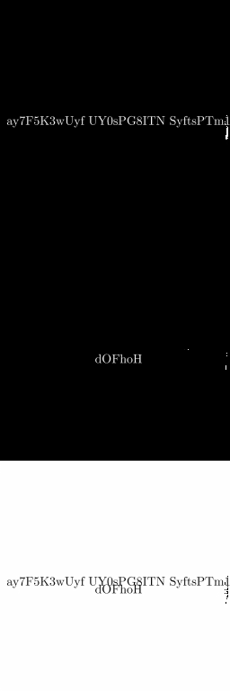